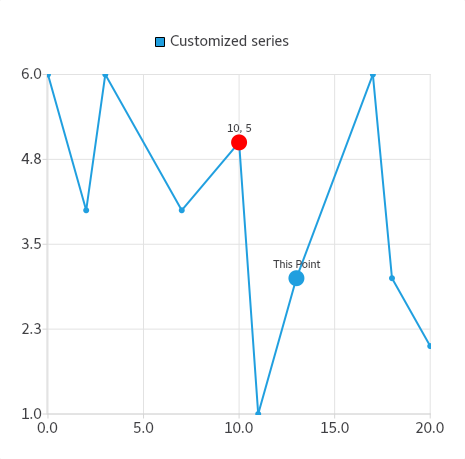

QXYSeries Class
The QXYSeries class is a base class for line, spline, and scatter series. More...
| Header: | #include <QXYSeries> |
| Instantiated By: | XYSeries |
| Inherits: | QAbstractSeries |
| Inherited By: |
Public Types
(since 6.2) enum class | PointConfiguration { Color, Size, Visibility, LabelVisibility, LabelFormat } |
Properties
|
|
Public Functions
| virtual | ~QXYSeries() |
| void | append(qreal x, qreal y) |
| void | append(const QPointF &point) |
| void | append(const QList<QPointF> &points) |
| const QPointF & | at(int index) const |
| QColor | bestFitLineColor() const |
(since 6.2) QPair<qreal, qreal> | bestFitLineEquation(bool &ok) const |
| bool | bestFitLineVisible() const |
| QBrush | brush() const |
| void | clear() |
(since 6.2) void | clearPointConfiguration(const int index) |
(since 6.2) void | clearPointConfiguration(const int index, const QXYSeries::PointConfiguration key) |
(since 6.2) void | clearPointsConfiguration() |
(since 6.2) void | clearPointsConfiguration(const QXYSeries::PointConfiguration key) |
| virtual QColor | color() const |
(since 6.2) void | colorBy(const QList<qreal> &sourceData, const QLinearGradient &gradient = QLinearGradient()) |
| int | count() const |
(since 6.2) void | deselectAllPoints() |
(since 6.2) void | deselectPoint(int index) |
(since 6.2) void | deselectPoints(const QList<int> &indexes) |
| void | insert(int index, const QPointF &point) |
(since 6.2) bool | isPointSelected(int index) |
(since 6.2) const QImage & | lightMarker() const |
(since 6.2) qreal | markerSize() const |
| QPen | pen() const |
(since 6.2) QHash<QXYSeries::PointConfiguration, QVariant> | pointConfiguration(const int index) const |
| bool | pointLabelsClipping() const |
| QColor | pointLabelsColor() const |
| QFont | pointLabelsFont() const |
| QString | pointLabelsFormat() const |
| bool | pointLabelsVisible() const |
| QList<QPointF> | points() const |
(since 6.2) QHash<int, QHash<QXYSeries::PointConfiguration, QVariant>> | pointsConfiguration() const |
| bool | pointsVisible() const |
| void | remove(qreal x, qreal y) |
| void | remove(const QPointF &point) |
| void | remove(int index) |
| void | removePoints(int index, int count) |
| void | replace(qreal oldX, qreal oldY, qreal newX, qreal newY) |
| void | replace(const QPointF &oldPoint, const QPointF &newPoint) |
| void | replace(int index, qreal newX, qreal newY) |
| void | replace(int index, const QPointF &newPoint) |
| void | replace(const QList<QPointF> &points) |
(since 6.2) void | selectAllPoints() |
(since 6.2) void | selectPoint(int index) |
(since 6.2) void | selectPoints(const QList<int> &indexes) |
(since 6.2) const QImage & | selectedLightMarker() const |
(since 6.2) QList<int> | selectedPoints() const |
| void | setBestFitLineColor(const QColor &color) |
| void | setBestFitLineVisible(bool visible = true) |
| virtual void | setBrush(const QBrush &brush) |
| virtual void | setColor(const QColor &color) |
(since 6.2) void | setLightMarker(const QImage &lightMarker) |
(since 6.2) void | setMarkerSize(qreal size) |
| virtual void | setPen(const QPen &pen) |
(since 6.2) void | setPointConfiguration(const int index, const QHash<QXYSeries::PointConfiguration, QVariant> &configuration) |
(since 6.2) void | setPointConfiguration(const int index, const QXYSeries::PointConfiguration key, const QVariant &value) |
| void | setPointLabelsClipping(bool enabled = true) |
| void | setPointLabelsColor(const QColor &color) |
| void | setPointLabelsFont(const QFont &font) |
| void | setPointLabelsFormat(const QString &format) |
| void | setPointLabelsVisible(bool visible = true) |
(since 6.2) void | setPointSelected(int index, bool selected) |
(since 6.2) void | setPointsConfiguration(const QHash<int, QHash<QXYSeries::PointConfiguration, QVariant>> &pointsConfiguration) |
| void | setPointsVisible(bool visible = true) |
| void | setSelectedColor(const QColor &color) |
(since 6.2) void | setSelectedLightMarker(const QImage &selectedLightMarker) |
(since 6.2) void | sizeBy(const QList<qreal> &sourceData, const qreal minSize, const qreal maxSize) |
(since 6.2) void | toggleSelection(const QList<int> &indexes) |
| QXYSeries & | operator<<(const QPointF &point) |
| QXYSeries & | operator<<(const QList<QPointF> &points) |
Signals
| void | bestFitLineColorChanged(const QColor &color) |
| void | bestFitLineVisibilityChanged(bool visible) |
| void | clicked(const QPointF &point) |
| void | colorChanged(QColor color) |
| void | doubleClicked(const QPointF &point) |
| void | hovered(const QPointF &point, bool state) |
(since 6.2) void | lightMarkerChanged(const QImage &lightMarker) |
| void | markerSizeChanged(qreal size) |
| void | penChanged(const QPen &pen) |
| void | pointAdded(int index) |
| void | pointLabelsClippingChanged(bool clipping) |
| void | pointLabelsColorChanged(const QColor &color) |
| void | pointLabelsFontChanged(const QFont &font) |
| void | pointLabelsFormatChanged(const QString &format) |
| void | pointLabelsVisibilityChanged(bool visible) |
| void | pointRemoved(int index) |
| void | pointReplaced(int index) |
| void | pointsRemoved(int index, int count) |
| void | pointsReplaced() |
| void | pressed(const QPointF &point) |
| void | released(const QPointF &point) |
| void | selectedColorChanged(const QColor &color) |
| void | selectedPointsChanged() |
Detailed Description
QXYSeries supports displaying best fit line on a chart. Best fit line is a line through a chart that expresses the relationship between points.
Member Type Documentation
[since 6.2] enum class QXYSeries::PointConfiguration
This enum value describes the particular configuration of a point.
| Constant | Value | Description |
|---|---|---|
QXYSeries::PointConfiguration::Color | 0 | This enum value can be used to change a point's color. If used together with QXYSeries::setPointConfiguration, the configuration's value should be a valid QColor. |
QXYSeries::PointConfiguration::Size | 1 | This enum value can be used to change a point's size. If used together with QXYSeries::setPointConfiguration, the configuration's value should be a number, such as qreal or int. |
QXYSeries::PointConfiguration::Visibility | 2 | This enum value can be used to hide or show the point. If used together with QXYSeries::setPointConfiguration, the configuration's value should be boolean. |
QXYSeries::PointConfiguration::LabelVisibility | 3 | This enum value can be used to hide or show the label of the point. If used together with QXYSeries::setPointConfiguration, the configuration's value should be boolean. |
QXYSeries::PointConfiguration::LabelFormat (since Qt 6.5) | 4 | This enum value can be used to set custom label text per-point. If used together with QXYSeries::setPointConfiguration, the configuration's value should be a string. |
Note: If an empty string is set as the LabelFormat, it will be ignored, and the series pointLabelsFormat will be used.
This enum was introduced in Qt 6.2.
See also pointLabelsFormat and setPointConfiguration().
Property Documentation
[since 6.2] bestFitLineColor : QColor
This property holds the color of best fit line.
This property was introduced in Qt 6.2.
Access functions:
| QColor | bestFitLineColor() const |
| void | setBestFitLineColor(const QColor &color) |
Notifier signal:
| void | bestFitLineColorChanged(const QColor &color) |
See also bestFitLineEquation and bestFitLineVisible.
[since 6.2] bestFitLineVisible : bool
This property holds the visibility of the best fit line.
This property is false by default.
This property was introduced in Qt 6.2.
Access functions:
| bool | bestFitLineVisible() const |
| void | setBestFitLineVisible(bool visible = true) |
Notifier signal:
| void | bestFitLineVisibilityChanged(bool visible) |
See also bestFitLineEquation.
color : QColor
This property holds the color of the series.
This is the line (pen) color in case of QLineSeries or QSplineSeries and the fill (brush) color in case of QScatterSeries or QAreaSeries.
Access functions:
| virtual QColor | color() const |
| virtual void | setColor(const QColor &color) |
Notifier signal:
| void | colorChanged(QColor color) |
pointLabelsClipping : bool
This property holds the clipping for data point labels.
This property is true by default. The labels on the edge of the plot area are cut when clipping is enabled.
Access functions:
| bool | pointLabelsClipping() const |
| void | setPointLabelsClipping(bool enabled = true) |
Notifier signal:
| void | pointLabelsClippingChanged(bool clipping) |
See also pointLabelsVisible.
pointLabelsColor : QColor
This property holds the color used for data point labels. By default, the color is the color of the brush defined in theme for labels.
Access functions:
| QColor | pointLabelsColor() const |
| void | setPointLabelsColor(const QColor &color) |
Notifier signal:
| void | pointLabelsColorChanged(const QColor &color) |
See also pointLabelsFormat.
pointLabelsFont : QFont
This property holds the font used for data point labels.
Access functions:
| QFont | pointLabelsFont() const |
| void | setPointLabelsFont(const QFont &font) |
Notifier signal:
| void | pointLabelsFontChanged(const QFont &font) |
See also pointLabelsFormat.
pointLabelsFormat : QString
This property holds the format used for showing labels with data points.
QXYSeries supports the following format tags:
| @index | The index in the series of the data point. [since 6.5] |
| @xPoint | The x-coordinate of the data point. |
| @yPoint | The y-coordinate of the data point. |
For example, the following usage of the format tags would produce labels that display the data point shown inside brackets separated by a comma (x, y):
series->setPointLabelsFormat("@index: (@xPoint, @yPoint)");
By default, the labels' format is set to @xPoint, @yPoint. The labels are shown on the plot area, and the labels on the edge of the plot area are cut. If the points are close to each other, the labels may overlap.
Access functions:
| QString | pointLabelsFormat() const |
| void | setPointLabelsFormat(const QString &format) |
Notifier signal:
| void | pointLabelsFormatChanged(const QString &format) |
See also pointLabelsVisible, pointLabelsFont, and pointLabelsColor.
pointLabelsVisible : bool
This property holds the visibility of data point labels.
This property is false by default.
Access functions:
| bool | pointLabelsVisible() const |
| void | setPointLabelsVisible(bool visible = true) |
Notifier signal:
| void | pointLabelsVisibilityChanged(bool visible) |
See also pointLabelsFormat and pointLabelsClipping.
pointsVisible : bool
This property holds whether the data points are visible and should be drawn.
Access functions:
| bool | pointsVisible() const |
| void | setPointsVisible(bool visible = true) |
[since 6.2] selectedColor : QColor
This property holds the color of the selected points.
This is the fill (brush) color of points marked as selected. If not specified, value of QXYSeries::color is used as default.
This property was introduced in Qt 6.2.
Access functions:
| virtual QColor | color() const |
| void | setSelectedColor(const QColor &color) |
Notifier signal:
| void | selectedColorChanged(const QColor &color) |
See also color.
Member Function Documentation
[virtual noexcept] QXYSeries::~QXYSeries()
Deletes the series. Series added to QChart instances are owned by them, and are deleted when the QChart instances are deleted.
void QXYSeries::append(qreal x, qreal y)
Adds the data point with the coordinates x and y to the series.
void QXYSeries::append(const QPointF &point)
This is an overloaded function.
Adds the data point point to the series.
void QXYSeries::append(const QList<QPointF> &points)
This is an overloaded function.
Adds the list of data points specified by points to the series.
const QPointF &QXYSeries::at(int index) const
Returns the data point at the position specified by index in the internal series of points.
[signal] void QXYSeries::bestFitLineColorChanged(const QColor &color)
This signal is emitted when the color used for the best fit line changes to color.
Note: Notifier signal for property bestFitLineColor.
[since 6.2] QPair<qreal, qreal> QXYSeries::bestFitLineEquation(bool &ok) const
Returns a pair of numbers where the first number is a slope factor and the second number is intercept of a linear function for a best fit line.
Those factors are calculated using Least Squares Method based on points passed to the series.
Parameter ok is used to report a failure by setting its value to false and to report a success by setting its value to true.
This function was introduced in Qt 6.2.
See also QXYSeries::bestFitLineVisible().
[signal] void QXYSeries::bestFitLineVisibilityChanged(bool visible)
This signal is emitted when the visibility of the best fit line changes to visible.
Note: Notifier signal for property bestFitLineVisible.
QBrush QXYSeries::brush() const
Returns the brush used to fill the data points for the series.
See also setBrush().
void QXYSeries::clear()
Removes all points from the series.
See also pointsRemoved().
[since 6.2] void QXYSeries::clearPointConfiguration(const int index)
Removes the configuration of a point located at index and restores the default look derived from the series' settings.
Note: It doesn't affect the configuration of other points.
This function was introduced in Qt 6.2.
See also clearPointsConfiguration() and setPointConfiguration().
[since 6.2] void QXYSeries::clearPointConfiguration(const int index, const QXYSeries::PointConfiguration key)
Removes the configuration property identified by key from the point at index and restores the default look derived from the series' settings.
Removes the configuration type, such as color or size, specified by key from the point at index with configuration customizations, allowing that configuration property to be rendered as the default specified in the series' properties.
Note: It doesn't affect the configuration of other points.
This function was introduced in Qt 6.2.
See also clearPointsConfiguration() and setPointConfiguration().
[since 6.2] void QXYSeries::clearPointsConfiguration()
Removes the configuration of all points in the series and restores the default look derived from the series' settings.
This function was introduced in Qt 6.2.
See also setPointConfiguration().
[since 6.2] void QXYSeries::clearPointsConfiguration(const QXYSeries::PointConfiguration key)
Removes the configuration property identified by key from all points and restores the default look derived from the series' settings.
Removes the configuration type, such as color or size, specified by key from all points with configuration customizations, allowing that configuration property to be rendered as the default specified in the series properties.
This function was introduced in Qt 6.2.
See also clearPointsConfiguration() and setPointConfiguration().
[signal] void QXYSeries::clicked(const QPointF &point)
This signal is emitted when the user triggers a mouse event by clicking the point point in the chart.
See also pressed(), released(), and doubleClicked().
[since 6.2] void QXYSeries::colorBy(const QList<qreal> &sourceData, const QLinearGradient &gradient = QLinearGradient())
Sets the points' color according to a passed list of values. Values from sourceData are sorted and mapped to the gradient.
If the series has a QColorAxis attached, then a gradient from the axis is going to be used.
This function was introduced in Qt 6.2.
See also setPointConfiguration(), pointConfiguration(), and QColorAxis.
[signal] void QXYSeries::colorChanged(QColor color)
This signal is emitted when the line (pen) color changes to color.
Note: Notifier signal for property color.
int QXYSeries::count() const
Returns the number of data points in a series.
[since 6.2] void QXYSeries::deselectAllPoints()
Deselects all points in the series.
Note: Emits QXYSeries::selectedPointsChanged
This function was introduced in Qt 6.2.
See also setPointSelected().
[since 6.2] void QXYSeries::deselectPoint(int index)
Deselects point at given index.
Note: Emits QXYSeries::selectedPointsChanged
This function was introduced in Qt 6.2.
See also setPointSelected().
[since 6.2] void QXYSeries::deselectPoints(const QList<int> &indexes)
Marks multiple points passed in a indexes list as deselected.
Note: Emits QXYSeries::selectedPointsChanged
This function was introduced in Qt 6.2.
See also setPointSelected().
[signal] void QXYSeries::doubleClicked(const QPointF &point)
This signal is emitted when the user double-clicks the data point point in the chart. The point is the point where the first press was triggered.
See also pressed(), released(), and clicked().
[signal] void QXYSeries::hovered(const QPointF &point, bool state)
This signal is emitted when a mouse is hovered over the point point in the chart. When the mouse moves over the point, state turns true, and when the mouse moves away again, it turns false.
void QXYSeries::insert(int index, const QPointF &point)
Inserts the data point point in the series at the position specified by index.
See also pointAdded().
[since 6.2] bool QXYSeries::isPointSelected(int index)
Returns true if point at given index is among selected points and false otherwise.
Note: Selected points are drawn using the selected color if it was specified.
This function was introduced in Qt 6.2.
See also selectedPoints(), setPointSelected(), and setSelectedColor().
[since 6.2] const QImage &QXYSeries::lightMarker() const
Gets the image used for drawing markers on each point of the series.
The default value is QImage(), meaning no light marker will be painted.
The light markers visualize the data points of this series and as such are an alternative to setPointsVisible(true). Both features can be enabled independently from each other.
Unlike the elements of QScatterSeries the light markers are not represented by QGraphicsItem, but are just painted (no objects created). However, the mouse-event-signals of QXYSeries behave the same way, meaning that you'll get the exact domain value of the point if you click/press/hover the light marker. You'll still get the in between domain value if you click on the line. The light markers are above the line in terms of painting as well as events.
This function was introduced in Qt 6.2.
See also QXYSeries::setLightMarker().
[signal, since 6.2] void QXYSeries::lightMarkerChanged(const QImage &lightMarker)
This signal is emitted when the light marker image changes to lightMarker.
This function was introduced in Qt 6.2.
See also QXYSeries::setLightMarker().
[since 6.2] qreal QXYSeries::markerSize() const
Gets the size of the marker used to render points in the series.
The default size depends on the specific QXYSeries type. QScatterSeries has a default of 15.0 QLineSeries has a default of the series pen size * 1.5
This function was introduced in Qt 6.2.
See also setMarkerSize() and QScatterSeries::markerSize.
[signal] void QXYSeries::markerSizeChanged(qreal size)
This signal is emitted when the marker size changes to size.
QPen QXYSeries::pen() const
Returns the pen used to draw the outline of the data points for the series.
See also setPen().
[signal] void QXYSeries::penChanged(const QPen &pen)
This signal is emitted when the pen changes to pen.
[signal] void QXYSeries::pointAdded(int index)
This signal is emitted when a point is added at the position specified by index.
See also append() and insert().
[since 6.2] QHash<QXYSeries::PointConfiguration, QVariant> QXYSeries::pointConfiguration(const int index) const
Returns a map representing the configuration of a point at index.
With points configuration you can change various aspects of each point's look.
This function was introduced in Qt 6.2.
See also setPointConfiguration().
[signal] void QXYSeries::pointLabelsClippingChanged(bool clipping)
This signal is emitted when the clipping of the data point labels changes to clipping.
Note: Notifier signal for property pointLabelsClipping.
[signal] void QXYSeries::pointLabelsColorChanged(const QColor &color)
This signal is emitted when the color used for data point labels changes to color.
Note: Notifier signal for property pointLabelsColor.
[signal] void QXYSeries::pointLabelsFontChanged(const QFont &font)
This signal is emitted when the font used for data point labels changes to font.
Note: Notifier signal for property pointLabelsFont.
[signal] void QXYSeries::pointLabelsFormatChanged(const QString &format)
This signal is emitted when the format of data point labels changes to format.
Note: Notifier signal for property pointLabelsFormat.
[signal] void QXYSeries::pointLabelsVisibilityChanged(bool visible)
This signal is emitted when the visibility of the data point labels changes to visible.
Note: Notifier signal for property pointLabelsVisible.
[signal] void QXYSeries::pointRemoved(int index)
This signal is emitted when a point is removed from the position specified by index.
See also remove().
[signal] void QXYSeries::pointReplaced(int index)
This signal is emitted when a point is replaced at the position specified by index.
See also replace().
QList<QPointF> QXYSeries::points() const
Returns the points in the series.
[since 6.2] QHash<int, QHash<QXYSeries::PointConfiguration, QVariant>> QXYSeries::pointsConfiguration() const
Returns a map with points' indexes as keys and points' configuration as values.
This function was introduced in Qt 6.2.
See also setPointsConfiguration(), setPointConfiguration(), and pointConfiguration().
[signal] void QXYSeries::pointsRemoved(int index, int count)
This signal is emitted when the number of points specified by count is removed starting at the position specified by index.
See also removePoints() and clear().
[signal] void QXYSeries::pointsReplaced()
This signal is emitted when all points are replaced with other points.
See also replace().
[signal] void QXYSeries::pressed(const QPointF &point)
This signal is emitted when the user presses the data point point in the chart and holds down the mouse button.
See also clicked(), released(), and doubleClicked().
[signal] void QXYSeries::released(const QPointF &point)
This signal is emitted when the user releases the mouse press on the data point specified by point.
See also pressed(), clicked(), and doubleClicked().
void QXYSeries::remove(qreal x, qreal y)
Removes the point that has the coordinates x and y from the series.
See also pointRemoved().
void QXYSeries::remove(const QPointF &point)
Removes the data point point from the series.
See also pointRemoved().
void QXYSeries::remove(int index)
Removes the point at the position specified by index from the series.
See also pointRemoved().
void QXYSeries::removePoints(int index, int count)
Removes the number of points specified by count from the series starting at the position specified by index.
See also pointsRemoved().
void QXYSeries::replace(qreal oldX, qreal oldY, qreal newX, qreal newY)
Replaces the point with the coordinates oldX and oldY with the point with the coordinates newX and newY. Does nothing if the old point does not exist.
See also pointReplaced().
void QXYSeries::replace(const QPointF &oldPoint, const QPointF &newPoint)
Replaces the point specified by oldPoint with the one specified by newPoint.
See also pointReplaced().
void QXYSeries::replace(int index, qreal newX, qreal newY)
Replaces the point at the position specified by index with the point that has the coordinates newX and newY.
See also pointReplaced().
void QXYSeries::replace(int index, const QPointF &newPoint)
Replaces the point at the position specified by index with the point specified by newPoint.
See also pointReplaced().
void QXYSeries::replace(const QList<QPointF> &points)
Replaces the current points with the points specified by points.
Note: This is much faster than replacing data points one by one, or first clearing all data, and then appending the new data. Emits QXYSeries::pointsReplaced() when the points have been replaced.
See also pointsReplaced().
[since 6.2] void QXYSeries::selectAllPoints()
Marks all points in the series as selected,
Note: Emits QXYSeries::selectedPointsChanged
This function was introduced in Qt 6.2.
See also setPointSelected().
[since 6.2] void QXYSeries::selectPoint(int index)
Marks point at index as selected.
Note: Emits QXYSeries::selectedPointsChanged
This function was introduced in Qt 6.2.
See also setPointSelected().
[since 6.2] void QXYSeries::selectPoints(const QList<int> &indexes)
Marks multiple points passed in a indexes list as selected.
Note: Emits QXYSeries::selectedPointsChanged
This function was introduced in Qt 6.2.
See also setPointSelected().
[since 6.2] const QImage &QXYSeries::selectedLightMarker() const
Returns the image used for drawing markers on selected series' points.
The default value is QImage(), meaning usual lightMarker() will be painted.
This is equivalent to selectedColor if you prefer light markers over normal points, but still want to distinguish selected points.
This function was introduced in Qt 6.2.
See also setSelectedLightMarker(), lightMarker(), selectedColor, and setPointSelected().
[since 6.2] QList<int> QXYSeries::selectedPoints() const
Returns a list of points indexes marked as selected. Selected points are visible regardless of points visibility.
This function was introduced in Qt 6.2.
See also setPointSelected() and pointsVisible().
[signal] void QXYSeries::selectedPointsChanged()
This signal is emitted when the points selection changes.
[virtual] void QXYSeries::setBrush(const QBrush &brush)
Sets the brush used for drawing points on the chart to brush. If the brush is not defined, the brush from the chart theme setting is used.
See also brush() and QChart::setTheme().
[since 6.2] void QXYSeries::setLightMarker(const QImage &lightMarker)
Sets the image used for drawing markers on each point of the series as the value of lightMarker.
The default value is a default-QImage() (QImage::isNull() == true), meaning no light marker will be painted. You can reset back to default (disabled) by calling this function with a null QImage (QImage()).
The light markers visualize the data points of this series and as such are an alternative to setPointsVisible(true). If a light marker is set with this method, visible points as set with setPointsVisible(true) are not displayed.
Unlike the elements of QScatterSeries the light markers are not represented by QGraphicsItem, but are just painted (no objects created). However, the mouse-event-signals of QXYSeries behave the same way, meaning that you'll get the exact domain value of the point if you click/press/hover the light marker. You'll still get the in between domain value if you click on the line. The light markers are above the line in terms of painting as well as events.
This function was introduced in Qt 6.2.
See also QXYSeries::lightMarker().
[since 6.2] void QXYSeries::setMarkerSize(qreal size)
Sets the size of the marker used to render points in the series.
The default size is 15.0.
This function was introduced in Qt 6.2.
See also QScatterSeries::markerSize.
[virtual] void QXYSeries::setPen(const QPen &pen)
Sets the pen used for drawing points on the chart to pen. If the pen is not defined, the pen from the chart theme is used.
See also pen() and QChart::setTheme().
[since 6.2] void QXYSeries::setPointConfiguration(const int index, const QHash<QXYSeries::PointConfiguration, QVariant> &configuration)
Enables customizing the appearance of a point located at index with desired configuration.
With points configuration you can change various aspects of every point's appearance.
A point's configuration is represented as a hash map with QXYSeries::pointConfiguration keys and QVariant values. For example:
QLineSeries *series = new QLineSeries(); series->setName("Customized series"); series->setPointsVisible(true); *series << QPointF(0, 6) << QPointF(2, 4) << QPointF(3, 6) << QPointF(7, 4) << QPointF(10, 5) << QPointF(11, 1) << QPointF(13, 3) << QPointF(17, 6) << QPointF(18, 3) << QPointF(20, 2); QChart *chart = new QChart(); chart->addSeries(series); chart->createDefaultAxes(); QHash<QXYSeries::PointConfiguration, QVariant> conf; conf[QXYSeries::PointConfiguration::Color] = QColor(Qt::red); conf[QXYSeries::PointConfiguration::Size] = 8; conf[QXYSeries::PointConfiguration::LabelVisibility] = true; series->setPointConfiguration(4, conf); conf.remove(QXYSeries::PointConfiguration::Color); conf[QXYSeries::PointConfiguration::LabelFormat] = "This Point"; series->setPointConfiguration(6, conf);
In this example, you can see a default QLineSeries with 10 points and with changed configuration of two points. Both changed points are visibly bigger than the others with a look derived from the series configuration. By default, points don't have labels, but the point at index 4 has a label thanks to the QXYSeries::PointConfiguration::LabelVisibility and QXYSeries::PointConfiguration::LabelFormat configuration values. The point at index 6 has a custom label This Point thanks to the QXYSeries::PointConfiguration::LabelFormat configuration value. Below is an example of a chart created in this way:

This function was introduced in Qt 6.2.
See also pointConfiguration(), pointsConfiguration(), and clearPointsConfiguration().
[since 6.2] void QXYSeries::setPointConfiguration(const int index, const QXYSeries::PointConfiguration key, const QVariant &value)
Enables customizing a particular aspect of a point's configuration.
Note: Points configuration concept provides a flexible way to configure various aspects of a point's appearance. Thus, values need to have an elastic type such as QVariant. See QXYSeries::PointConfiguration to see what value should be passed for certain key.
This function was introduced in Qt 6.2.
See also pointsConfiguration().
[since 6.2] void QXYSeries::setPointSelected(int index, bool selected)
Marks point at given index as either selected or deselected as specified by selected.
Note: Selected points are drawn using the selected color if it was specified. Emits QXYSeries::selectedPointsChanged
This function was introduced in Qt 6.2.
See also isPointSelected(), setPointSelected(), and setSelectedColor().
[since 6.2] void QXYSeries::setPointsConfiguration(const QHash<int, QHash<QXYSeries::PointConfiguration, QVariant>> &pointsConfiguration)
Enables customizing the configuration of multiple points as specified by pointsConfiguration.
This function was introduced in Qt 6.2.
See also pointsConfiguration().
[since 6.2] void QXYSeries::setSelectedLightMarker(const QImage &selectedLightMarker)
Sets the image used for drawing markers on selected series's points to selectedLightMarker.
The default value is QImage(), meaning usual lightMarker() will be painted.
This is an equivalent for selectedColor if you prefer light markers over normal points, but still want to distinguish selected points.
This function was introduced in Qt 6.2.
See also selectedLightMarker(), lightMarker(), selectedColor, and setPointSelected().
[since 6.2] void QXYSeries::sizeBy(const QList<qreal> &sourceData, const qreal minSize, const qreal maxSize)
Sets the points' sizes according to a passed list of values. Values from sourceData are sorted and mapped to a point size which is between minSize and maxSize.
Note: If sourceData length is smaller than number of points in the series, then size of the points at the end of the series will stay the same.
This function was introduced in Qt 6.2.
See also setPointConfiguration() and pointConfiguration().
[since 6.2] void QXYSeries::toggleSelection(const QList<int> &indexes)
Changes selection state of points at given indexes to the opposite one. Makes
Note: Emits QXYSeries::selectedPointsChanged
This function was introduced in Qt 6.2.
See also setPointSelected().
QXYSeries &QXYSeries::operator<<(const QPointF &point)
Stream operator for adding the data point point to the series.
See also append().
QXYSeries &QXYSeries::operator<<(const QList<QPointF> &points)
Stream operator for adding the list of data points specified by points to the series.
See also append().